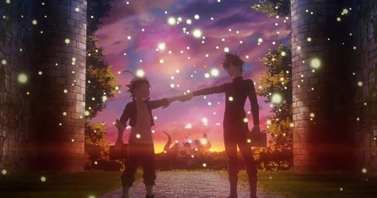
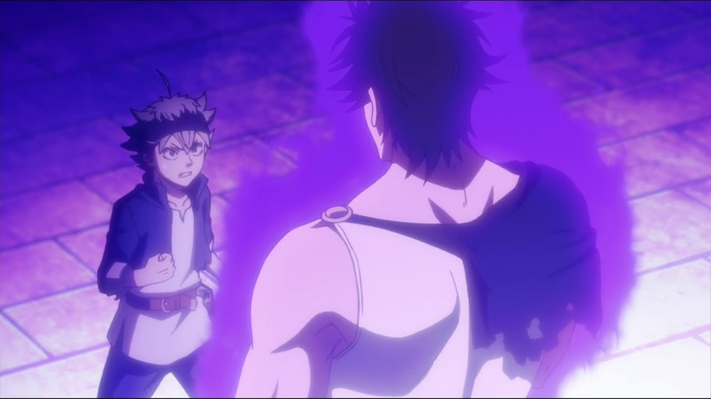

Black Clover
- Tipo: Serie
- Genero: Shōnen
- Emitido: Oct 3 de 2017 a Mar 30 de 2021
- Estado: Concluido
Hay un mundo en donde la magia lo es todo. Asta y Yuno crecieron en una iglesia, y el día que cumplieron 15 años participaron en una ceremonia en donde les concedieron grimores los cuales despiertan los poderes mágicos innatos. Asta y Yuno, para probar sus poderes, y el honor que les fueron concedido, se lanzan en una travesía para llegar a ser emperadores mágicos.
CAPITULOS

